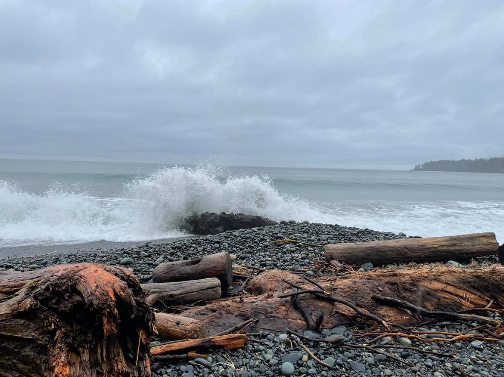

It has been 4 years since my life crumbled apart. I have my ups and downs but overall I feel like I’ve quieted the beast. I have learned to do more then just survive its wrath. I have discovered after an attack a cycle occurs. First, I am grateful to find steady ground. Second, I assess the damages and I brace for the aftershocks.
If it has been really bad, when the calm is setting in a tidal wave of emotion and anxiety pummels me. Everything is heightened. Even when I know it is coming the only way through is through.
Anxiety has always been my side kick. It is a response to high levels of pain, and the trauma of been so sick. It is like an over ambitious friend!
Over the years I have found it takes skill to navigate the waters. When it initially hits, I don’t know what is up from down. The harder I kick the harder it is. I have to surrender to what is. Take sips of air when I can and try calm my Being.
As much as I want to wish it away, it is part of me that makes me a survivor. It may feel like an ocean of emotion overwhelming all of me, but I do my best to embrace what is, and take it as a grain of salt.
It is seeing life through a survival lens but life is more then surviving.
I am safe more often than not, so with patience and practice I can calm the shores. Recreate my story. It took some time for me to find trust in my practices. I incorporated them back into my life little by little. If I did too much too quickly it would have the opposite affect. My husband’s reminder still remains true; all I have to do is breathe. Mindful breath is my guide. Taking long, slow fluid breaths, and making an exhale longer then inhale, stimulates the parasympathetic nervous system. This slows the heart rate, reduces blood pressure, releases tension and sends signals to the brain it can move out of flight or fight.
Creating a sense of safety by making sure that basic survival needs are met; eating nutritious un-processed foods and staying well hydrated also allows the nervous system to calm. Feeling connected to Mother Earth and moving out in nature reminds me that I am more than my ailments. By incorporating yoga practices and participating in my cultural teaching I know that there is a lot of be grateful for. Life is more than surviving, with a broader perspective there will be a bright horizon.